Base R plot(), hexify_heatmap() for
ggplot2, and building custom maps from scratch.
Installation
# Install from CRAN
install.packages("hexify")
# Or install development version from GitHub
# install.packages("pak")
pak::pak("gcol33/hexify")Sample Data
We’ll use European cities throughout:
cities <- data.frame(
name = c("Vienna", "Paris", "Madrid", "Berlin", "Rome",
"Warsaw", "Prague", "Brussels", "Amsterdam", "Lisbon"),
lon = c(16.37, 2.35, -3.70, 13.40, 12.50,
21.01, 14.42, 4.35, 4.90, -9.14),
lat = c(48.21, 48.86, 40.42, 52.52, 41.90,
52.23, 50.08, 50.85, 52.37, 38.72)
)
grid <- hex_grid(area_km2 = 10000)
result <- hexify(cities, lon = "lon", lat = "lat", grid = grid)Base R Plotting with plot()
The plot() method provides quick visualization with
sensible defaults.
Basic Plot
plot(result, main = "European Cities")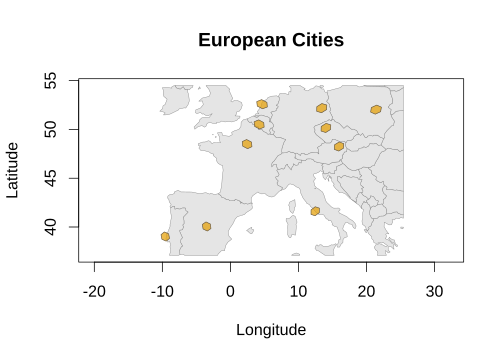
#> Spherical geometry (s2) switched onCustomizing Colors and Styling
plot(result,
grid_fill = "steelblue",
grid_border = "darkblue",
grid_alpha = 0.6,
basemap_fill = "ivory",
basemap_border = "gray50",
main = "Custom Styling")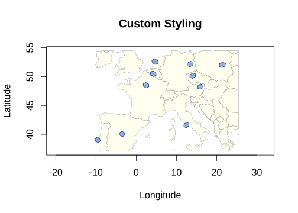
#> Spherical geometry (s2) switched onDisabling the Basemap
plot(result,
basemap = FALSE,
grid_fill = "forestgreen",
grid_border = "darkgreen",
main = "No Basemap")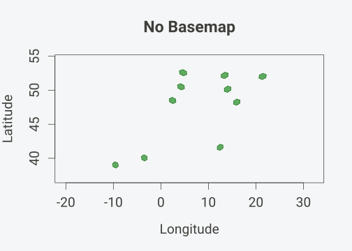
Setting Map Extent
To control the map extent, use crop = TRUE with
crop_expand to add padding:
plot(result,
crop = TRUE,
crop_expand = 0.2,
main = "Custom Extent (20% padding)")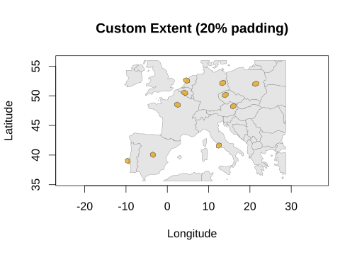
#> Spherical geometry (s2) switched onShowing Points
Points can be displayed on top of hexagon cells. By default, points are jittered within their assigned cell to avoid overplotting.
Basic Points
plot(result,
show_points = TRUE,
point_color = "red",
main = "Cities with Points")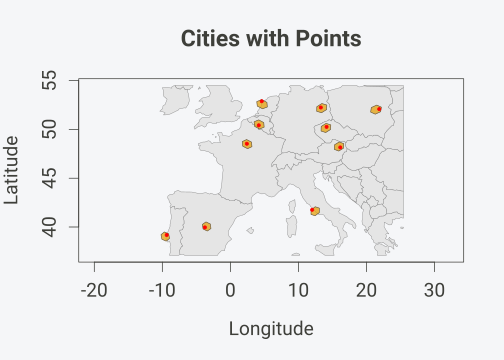
#> Spherical geometry (s2) switched onPoint Size Presets
The point_size parameter accepts presets that define
what fraction of a hex cell a single point covers:
| Preset | Coverage |
|---|---|
"tiny" |
~2% of cell |
"small" |
~5% of cell |
"normal" / "auto"
|
~10% of cell |
"large" |
~20% of cell |
"very large" |
~35% of cell |
oldpar <- par(mfrow = c(2, 2), cex = 1, cex.main = 1)
plot(result, show_points = TRUE, point_size = "small",
point_color = "red", main = "small (~5%)")
#> Spherical geometry (s2) switched on
plot(result, show_points = TRUE, point_size = "normal",
point_color = "red", main = "normal (~10%)")
#> Spherical geometry (s2) switched on
plot(result, show_points = TRUE, point_size = "large",
point_color = "red", main = "large (~20%)")
#> Spherical geometry (s2) switched on
plot(result, show_points = TRUE, point_size = "very large",
point_color = "red", main = "very large (~35%)")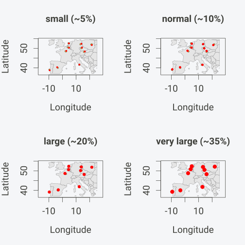
#> Spherical geometry (s2) switched on
par(oldpar)Custom Point Styling
plot(result,
show_points = TRUE,
point_size = "small",
point_color = "darkblue",
point_alpha = 0.8,
grid_fill = "lightyellow",
grid_border = "orange",
main = "Custom Point Styling")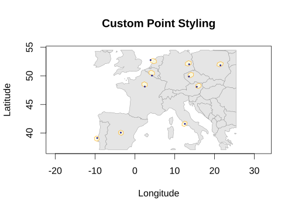
#> Spherical geometry (s2) switched onDisabling Jitter
For exact point locations (no randomization):
plot(result,
show_points = TRUE,
jitter = FALSE,
point_color = "red",
main = "Points at Cell Centers (No Jitter)")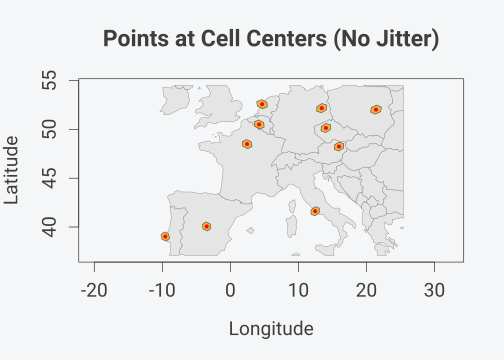
#> Spherical geometry (s2) switched onggplot2 with hexify_heatmap()
For ggplot2 users, hexify_heatmap() returns a ggplot
object that can be further customized.
Basic ggplot
hexify_heatmap(result, basemap = "world", title = "European Cities")
#> Spherical geometry (s2) switched off
#> Spherical geometry (s2) switched on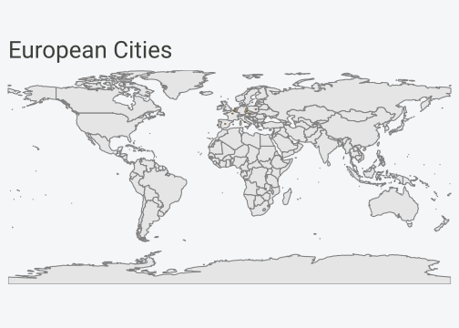
Customizing with ggplot2
Since hexify_heatmap() returns a ggplot object, you can
add layers and modify themes:
hexify_heatmap(result, basemap = "world") +
labs(
title = "Major European Cities",
subtitle = "Assigned to ISEA hexagonal grid cells",
caption = "Data: Sample cities"
) +
theme_minimal(base_size = FIG_BASE_SIZE) +
theme(
plot.title = element_text(face = "bold", size = 14),
panel.grid = element_blank()
)
#> Spherical geometry (s2) switched off
#> Spherical geometry (s2) switched on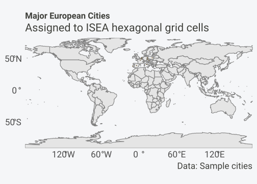
Adding Custom Layers
# Get the city coordinates
city_points <- st_as_sf(cities, coords = c("lon", "lat"), crs = 4326)
hexify_heatmap(result, basemap = "world", title = "Cities with Labels") +
geom_sf(data = city_points, color = "red", size = 2) +
geom_sf_label(data = city_points, aes(label = name),
nudge_y = 0.8, size = 5) +
coord_sf(xlim = c(-5, 25), ylim = c(45, 55))
#> Spherical geometry (s2) switched off
#> Spherical geometry (s2) switched on
#> Coordinate system already present.
#> ℹ Adding new coordinate system, which will replace the existing one.
#> Warning in st_point_on_surface.sfc(sf::st_zm(x)): st_point_on_surface may not
#> give correct results for longitude/latitude data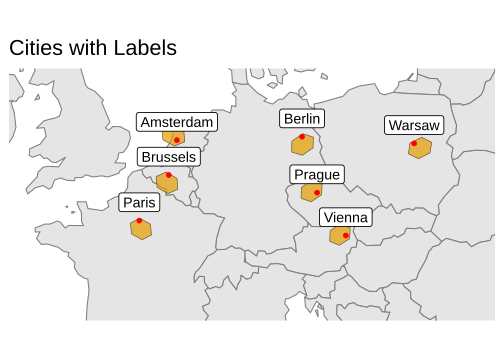
Heatmaps with Value Mapping
For choropleth-style visualizations with aggregated data, pass a
value column to hexify_heatmap().
Creating Aggregated Data
# Simulate observation data with counts
set.seed(42)
n_obs <- 100
obs_data <- data.frame(
lon = c(rnorm(60, 10, 8), rnorm(40, 0, 10)),
lat = c(rnorm(60, 48, 5), rnorm(40, 52, 6)),
count = rpois(n_obs, lambda = 50)
)
# Hexify
grid <- hex_grid(area_km2 = 10000)
obs_hex <- hexify(obs_data, lon = "lon", lat = "lat", grid = grid)Basic Heatmap
hexify_heatmap(
obs_hex,
value = "count",
title = "Observation Counts"
)
#> Spherical geometry (s2) switched off
#> Spherical geometry (s2) switched on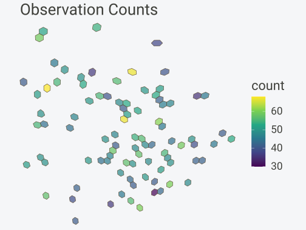
Customizing Colors
hexify_heatmap(
obs_hex,
value = "count",
colors = "YlOrRd",
title = "Yellow-Orange-Red Palette"
)
#> Spherical geometry (s2) switched off
#> Spherical geometry (s2) switched on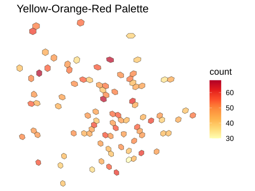
Available color palettes include any from
scale_fill_viridis_c() or
scale_fill_distiller():
Viridis options:
"viridis","magma","plasma","inferno","cividis","mako","rocket","turbo"ColorBrewer sequential:
"YlOrRd","YlGnBu","Blues","Greens","Reds","Purples", etc.
p1 <- hexify_heatmap(obs_hex, value = "count", colors = "viridis",
title = "viridis", xlim = c(-20, 35), ylim = c(35, 65))
#> Spherical geometry (s2) switched off
#> Spherical geometry (s2) switched on
p2 <- hexify_heatmap(obs_hex, value = "count", colors = "YlGnBu",
title = "YlGnBu", xlim = c(-20, 35), ylim = c(35, 65))
#> Spherical geometry (s2) switched off
#> Spherical geometry (s2) switched on
gridExtra::grid.arrange(p1, p2, ncol = 2)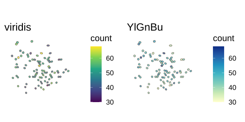
Setting Map Extent
hexify_heatmap(
obs_hex,
value = "count",
xlim = c(-20, 35),
ylim = c(35, 65),
title = "Zoomed to Region",
legend_title = "Count"
)
#> Spherical geometry (s2) switched off
#> Spherical geometry (s2) switched on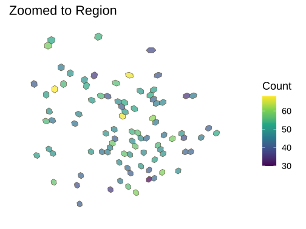
Basemap Options
# With world basemap (default)
hexify_heatmap(
obs_hex,
value = "count",
basemap = "world",
xlim = c(-20, 35),
ylim = c(35, 65),
title = "With World Basemap"
)
#> Spherical geometry (s2) switched off
#> Spherical geometry (s2) switched on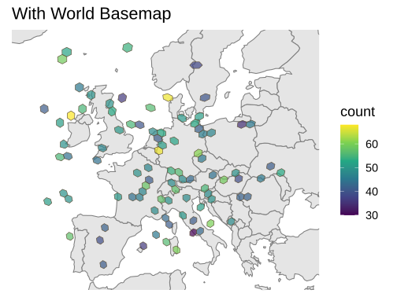
# Without basemap
hexify_heatmap(
obs_hex,
value = "count",
basemap = NULL,
xlim = c(-20, 35),
ylim = c(35, 65),
title = "No Basemap"
)
#> Spherical geometry (s2) switched off
#> Spherical geometry (s2) switched on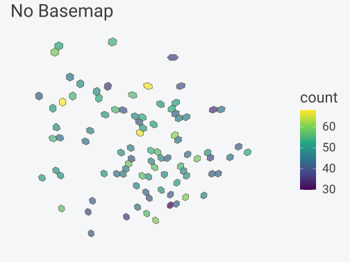
World Map Helper
plot_world() provides a quick way to draw a world
basemap:
plot_world(fill = "lightgray", border = "gray50")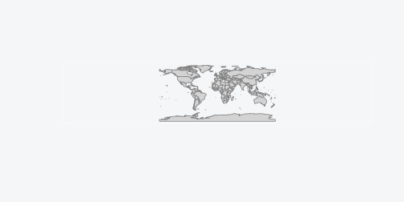
Customizing the World Map
plot_world(
fill = "antiquewhite",
border = "sienna",
xlim = c(-30, 50),
ylim = c(30, 70)
)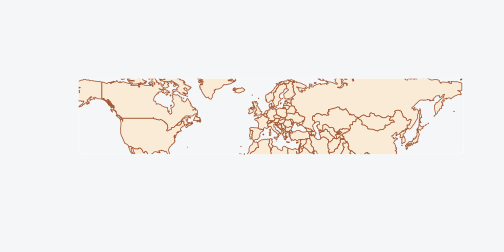
Pentagon Cell Visualization
The ISEA grid contains 12 pentagonal cells at the icosahedron vertices. Here’s how to visualize them:
# Pentagon locations (icosahedron vertices in standard ISEA orientation)
pentagon_coords <- data.frame(
type = c("Pole", "Pole", rep("Vertex", 10)),
lon = c(0, 0, seq(0, 324, by = 36)),
lat = c(90, -90, rep(c(26.57, -26.57), 5))
)
# Assign to grid and get polygons
grid <- hex_grid(area_km2 = 500000)
pentagon_cells <- lonlat_to_cell(pentagon_coords$lon, pentagon_coords$lat, grid)
pentagon_polys <- cell_to_sf(pentagon_cells, grid)
ggplot() +
geom_sf(data = hexify_world, fill = "gray95", color = "gray70", linewidth = 0.2) +
geom_sf(data = pentagon_polys, fill = alpha("purple", 0.6),
color = "purple", linewidth = 0.8) +
labs(
title = "Pentagon Cell Locations",
subtitle = "12 pentagonal cells at icosahedron vertices\n(area = 5/6 of hexagons)"
) +
theme_minimal(base_size = FIG_BASE_SIZE) +
theme(axis.text = element_blank(), axis.ticks = element_blank())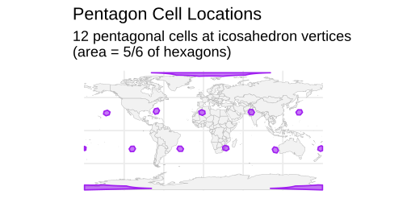
Cell Shapes
cell_to_sf(), plot(),
hexify_heatmap() and st_as_sf() draw cells as
hexagons by default. With shape = "gosper", each cell edge
is replaced depth times by three shorter segments turned
the same way, which gives Gosper islands (flowsnakes); each island keeps
its cell’s area, and the islands tile the sphere. With
shape = "descendants", an aperture-7 cell is drawn as the
outline of its descendants depth resolutions down, which
nests across resolutions.
grid <- hex_grid(resolution = 2, aperture = 7)
cells <- grid_rect(c(-15, 30, 40, 65), grid)$cell_id
ortho <- "+proj=ortho +lon_0=12 +lat_0=48"
set.seed(1)
colour <- factor(sample(8, length(cells), replace = TRUE))
shapes <- do.call(rbind, lapply(c("hexagon", "gosper", "descendants"), function(s) {
polys <- cell_to_sf(cells, grid, shape = s, depth = 4)
polys$colour <- colour[match(polys$cell_id, cells)]
polys$shape <- factor(s, levels = c("hexagon", "gosper", "descendants"))
polys
}))
ggplot(sf::st_transform(shapes, ortho)) +
geom_sf(aes(fill = colour), color = "gray25", linewidth = 0.15,
show.legend = FALSE) +
facet_wrap(~shape) +
scale_fill_brewer(palette = "Set3") +
theme_void(base_size = FIG_BASE_SIZE)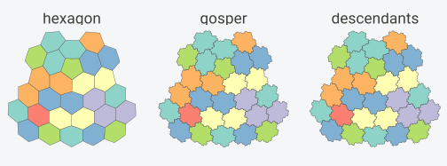
Random Sampling Visualization
Visualizing uniformly sampled cells across Earth:
# Grid parameters (coarse for faster build)
grid <- hex_grid(area_km2 = 200000, aperture = 3)
max_cell <- 10 * (3^grid@resolution) + 2
# Sample random cell IDs
set.seed(123)
N <- 50
random_cells <- sample(1:max_cell, N, replace = FALSE)
# Generate polygons for sampled cells
sample_polys <- cell_to_sf(random_cells, grid)
ggplot() +
geom_sf(data = hexify_world, fill = "gray95", color = "gray70", linewidth = 0.2) +
geom_sf(data = sample_polys, fill = alpha("forestgreen", 0.5),
color = "darkgreen", linewidth = 0.4) +
labs(title = sprintf("Random Sample of %d Cells", N),
subtitle = sprintf("~%.0f km2 each", grid@area_km2)) +
theme_minimal(base_size = FIG_BASE_SIZE) +
theme(axis.text = element_blank(), axis.ticks = element_blank())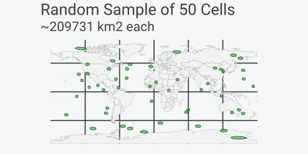
Building Custom Visualizations
For full control, generate polygons directly and use ggplot2:
# Create data with a numeric variable
set.seed(456)
stations <- data.frame(
lon = runif(50, -10, 30),
lat = runif(50, 35, 60),
temperature = rnorm(50, mean = 15, sd = 5)
)
# Hexify (coarser grid for faster build)
grid <- hex_grid(area_km2 = 20000)
stations_hex <- hexify(stations, lon = "lon", lat = "lat", grid = grid)
# Aggregate temperature by cell
stations_df <- as.data.frame(stations_hex)
stations_df$cell_id <- stations_hex@cell_id
cell_temps <- aggregate(temperature ~ cell_id, data = stations_df, FUN = mean)
# Generate polygons and merge data
cell_polys <- cell_to_sf(cell_temps$cell_id, grid)
cell_polys <- merge(cell_polys, cell_temps, by = "cell_id")
# Custom visualization
europe <- hexify_world[hexify_world$continent == "Europe", ]
ggplot() +
geom_sf(data = europe, fill = "gray95", color = "gray60", linewidth = 0.2) +
geom_sf(data = cell_polys, aes(fill = temperature),
color = "white", linewidth = 0.2) +
scale_fill_gradient2(
low = "blue", mid = "white", high = "red",
midpoint = 15, name = "Temp (°C)"
) +
coord_sf(xlim = c(-10, 30), ylim = c(35, 60)) +
labs(
title = "Mean Temperature by Grid Cell",
subtitle = "Diverging color scale centered at 15°C"
) +
theme_minimal(base_size = FIG_BASE_SIZE) +
theme(
axis.text = element_blank(),
axis.ticks = element_blank(),
panel.grid = element_line(color = "gray90")
)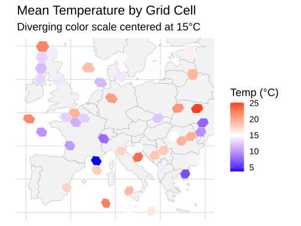
Function Reference
| Function | Description |
|---|---|
plot() |
Base R plot method for HexData objects |
hexify_heatmap() |
ggplot2 visualization, returns modifiable ggplot object |
plot_world() |
Quick world basemap |
cell_to_sf() |
Generate sf polygons from cell IDs |
See Also
vignette("quickstart")- Getting started with hexifyvignette("workflows")- Complete analysis workflows